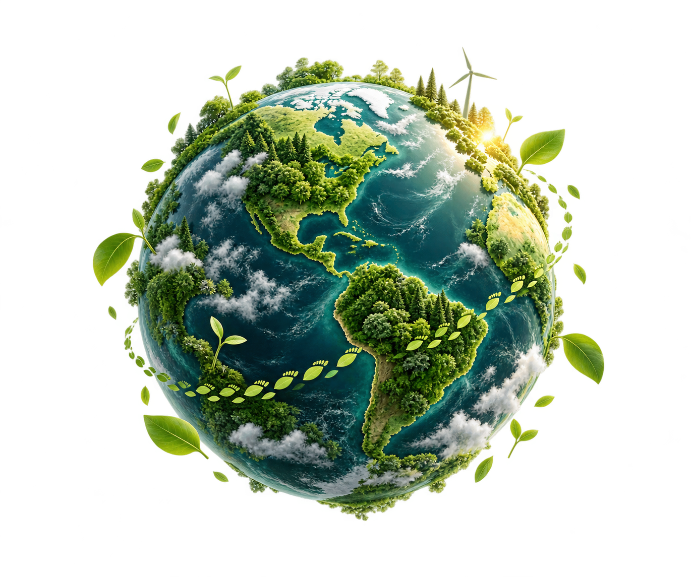

Everyday choices.
A clearer carbon footprint.
Explore how travel, energy, food, and everyday consumption contribute to your emissions. Understand your impact, view your carbon summary, and explore credible ways to offset it.
Make informed choices.

estimate your footprint
Build a clearer picture of your impact.
Choose your path
Select an audience to find the questionnaire made for you.
Educational Institution
Choose a climate quest for Junior School, Senior School, or College Students.
Choose an education quest ↗✳ WORKPLACE CLIMATE QUESTCorporates
Explore an employee questionnaire about workplace travel, energy, meals, and team practices.
Explore the employee quest ↗⌁ PERSONAL CLIMATE QUESTIndividuals
Take a personal quiz about travel, home energy, food, shopping, and everyday choices.
Start your individual quest ↗✦How your quest works
No grades and no gotchas. Just a clearer picture of the routines behind your impact.
Curiosity before
calculation.
Carbon accounting starts with everyday activity: how far you travel, the energy you use, the food you eat, and what you throw away. Estimating emissions is a separate step that needs clear, location-appropriate emission factors.
Explore a questionnaire ↗